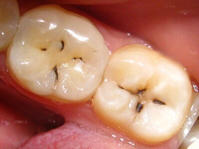
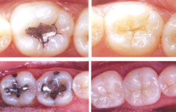
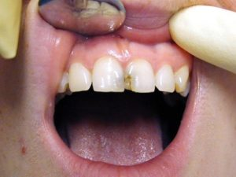
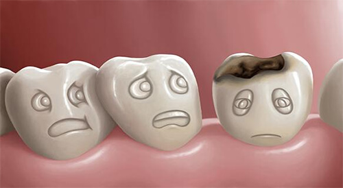
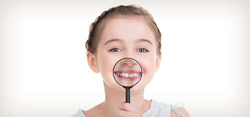
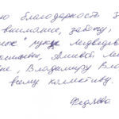

- Стадии кариеса и их лечение
- Лечение поверхностного кариеса
- Лечение среднего кариеса
- Лечение глубокого кариеса
- Лечение пришеечного кариеса
- Патологический кариес
- Вторичный кариес и профилактика
- Пломбирование корневых каналов зубов
- Материалы для пломбирования
- Установка временной и постоянной пломбы
- Лечение кариеса молочных зубов
- Лечение кариеса Icon
- Почему болит зуб под пломбой
- Отзывы и стоимость лечения
 Кариес – самое распространенное заболевание зубов, которое может развиваться в любом возрасте, даже у дошкольников.
Различают первичный и рецидивирующий (вторичный) кариес. Также выделяют стадии распространения кариеса – от поверхностного повреждения эмали на начальных этапах развития заболевания до глубоких кариозных поражений. Стоимость лечения кариеса зависит от того, на какой стадии пациент обратился в стоматологию. Клиника DentaGuard предлагает недорогое обслуживание с соблюдением передовых стандартов европейского качества. Мы работаем по следующему графику: Пн-Пт с 9.00 до 21.00 час мск, Сб с 9.00 до 18.00 час, Вс – выходной. Записаться вы всегда можете по телефону +7 (499) 409-76-60.
Стадии кариеса и их лечение
Причины рецидивов стоматологических нарушений: неполноценное или недостаточно качественное лечение, несоблюдение правил гигиены ротовой полости и индивидуальные особенности зубной ткани пациента. На лечение кариеса зубов в Москве цена зависит от степени развития заболевания и объема работ, который предстоит произвести для восстановления зубов.
Распад зубов, пораженных кариесом, — следствие бактериальной активности на поверхности эмали. Ротовая полость становится домом для миллионов бактерий. С употреблением в пищу сладких продуктов мы питаем «плохие» бактерии, которые производят кислоты, размножаясь колониями на зубах. Эти кислоты и разрушают зубы, пробираясь через эмаль к дентину и дальше – к пульпе.
Способствует развитию кариозной полости несколько факторов:
- Увлечение сладкими, липкими продуктами;
- Недостаточное удаление зубного налета, плохая гигиена;
- Снижение защитных факторов, недостаток слюны;
- Наличие старых пломб с нависающими краями.
Лечение поверхностного кариеса
Каждый из указанных выше факторов инициирует процесс кариеса, который развивается по определенной схеме. Самое первое изменение – стадия пятна, когда на эмали появляется белая или коричневая пигментация. Пятно оповещает о том, что наполняющие зубной налет бактерии удаляют с поверхности зубов минералы. Но происходит этот процесс на микроскопическом уровне. Зуб зачастую еще не изменен на ощупь, любые симптомы кариеса отсутствуют.
Кариозная полость не просматривается на рентгене. На этом этапе лечение поверхностного кариеса может не потребовать препарирования пораженных тканей бором. Проходит лечение зубов без сверления, с применением фторсодержащих и/или кальцийсодержащих препаратов и других восстанавливающих минерал продуктов. Процесс называется реминерализацией или купированием зубного кариеса.
Лечение среднего кариеса
Если начальное поражение не удалось обратить вспять, бактерии продолжают прокладывать тоннель через зуб. На этой стадии они пробираются к дентину, образуя полость. Дентин – это прямой путь к пульповой камере. Когда он поражен, зуб может стать чувствительным к холоду или сладкому. Полость уже заметна на рентгеновских снимках.
К сожалению, когда бактерии добираются до дентина, лечение среднего кариеса невозможно провести при помощи реминерализации. Необходимо тщательнее вычищение пораженных тканей и их заполнение. Выбор материалов для восстановления зависит от глубины и размера и размера полости.
Лечение глубокого кариеса
Если пациент долго не обращался к стоматологу, бактерии проникают к нервному пучку, поражая пульпу. Даже на этом этапе, если провести лечение глубокого кариеса на ранней стадии, можно спасти нервы и оставить зуб живым. Для этого необходимо использовать специальные медикаменты и мастерство рук лечащего врача.
Если нерв спасти невозможно, зуб теряет кровоснабжение. В этом случае необходимым становится лечение корневых каналов для полного восстановления. Некоторые зубы сигнализируют о кариесе сильной болью и дискомфортом. Но иногда симптомы протекают незаметно. Это еще раз подчеркивает важность профилактических визитов в клинику.
Лечение пришеечного кариеса
Причины развития этой формы кариеса, при которой поражению подвергается прикорневая зона зубов, аналогичны. Характерными признаками для нее является сильная боль, так как эмаль шейки тонка и откликается на любые изменения окружающей среды. Лечение пришеечного кариеса необходимо на самых ранних стадиях, так как именно он грозит стать причиной серьезных осложнений.
Методы восстановления зуба аналогичны перечисленным выше. Если речь ведется о форме кариеса в стадии пятна, применяется «стоматология без бора». Если изменения шагнули дальше – пораженные ткани деликатно препарируются и заполняются пломбировочными материалами.
Патологический кариес
Врач проводит полную оценку состояния всех зубов, чтобы выявить повреждение даже на самой начальной стадии. Наиболее сложно обнаружить кариес на соприкасающихся друг с другом поверхностях зубов. Найти пораженные ткани на стадии пятна позволяет использование детектора, который реагирует на поврежденные участки, окрашивая их в розовый цвет.
Также применяется диагностика фотополимеризатором, который дает возможность просветить зуб насквозь и таким образом найти скрытые кариозные полости и увидеть даже начальные патологические изменения.
В нашей стоматологии используют лучшие швейцарские, немецкие, японские и американские материалы, которые обеспечивают оптимальный результат терапии. Стоматологические материалы от проверенных временем производителей — один из гарантов качественного лечения.
При лечении кариеса зубов применяется метод с коффердамом (резиновая завеса, которая фиксируется на зуб и изолирует зуб от слюны и выделяемого человеком конденсата). Пары выдоха не подмешиваются в пломбу, что улучшает её качество и прилегание к тканям зуба. Работа с коффердамом уменьшает возникновение вторичного кариеса и сводит его к минимуму.
Этапы устранения кариозной полости:
- Анестезия производится карпульным шприцом (специальный шприц, при осуществлении инъекции нет болезненных ощущений или они минимальны).
- Очистка требующей лечения зоны от зубного налета, обработка поверхностей тканей зуба.
- Наложение коффердама (специального приспособления в виде латексного платка для изоляции области, в которой выполняется стоматологическое вмешательство) дает возможность создать правильные условия для лечения, обезопасив операционное поле от попадания влаги, а также служит профилактикой инфекционных осложнений, улучшает обзор, уменьшает время процедур.
- Удаление размягченного инфицированного дентина и нависающих краев эмали, создание полости нужной формы для надежной фиксации пломбы (вкладки).
- Полость обрабатывается антисептиками (в случае воспалительного процесса используются лечебные прокладки).
- Обработка полости зависит от типа адгезива, который вносят при лечении.
- После нанесения дентального адгезива полость закрывается пломбой либо керамической вкладкой.
Обычно процедура не сопровождается депульпированием зуба, но иногда все-таки приходится по показаниям удалять нерв (например, если ткани сильно разрушены и для восстановления зуба решено использовать коронку). В современной стоматологии лечение кариеса это не только закрытие образовавшегося дефекта, но и восстановление формы зуба (реставрация), его фиссур и цвета.
Вторичный кариес и профилактика
 Для предотвращения образования вторичного кариеса, используется «маркер». Он позволяет очистить ткани зуба, при этом не возникает необходимости широкого раскрытия кариозной полости, по возможности, сохраняется максимальное количество здоровых тканей. Полость тщательно промывают, высушивают и проводят глубокую фторотерапию.
Подготовленную полость заполняют керамической вкладкой или постоянной пломбой из нанокомпозита и полируют до естественного блеска. После лечения постоянные пломбы или керамические вкладки нуждаются в постоянном сервисе: шлифовке и полировке. Необходимо каждые полгода появляться у своего врача и узнавать состояние пломб, качество прилегания и состояние контактных пунктов, далее зубы тщательно обрабатываются защитным препаратом и досконально пришлифовываются поверхности всех проведенных ранее реставраций.
Пломбирование корневых каналов зубов
Сегодня эндодонтическому лечению уделяется особое внимание. Сложная для обработки зона (с учетом ветвистости корневой системы и сложности структуры) должна тщательно исследоваться, хорошо обрабатываться и герметично заполняться, чтобы в последующий период не возникло осложнений. Профессионально проведенное пломбирование корневых каналов зубов позволит вернуть им здоровье и защитить их от попадания инфекции.

Материалы для пломбирования
От мастерства и опыта стоматолога зависит качество лечения. Врач должен поставить пломбу после тщательной обработки каналов, после чего обязан убедиться, что весь канал герметично заполнен материалом.
Учитывая, что материалы для пломбирования соприкасаются с тканями периодонтальной связки, к ним предъявляются высокие требования. Они должны быть биосовместимы с человеческим организмом, гипоаллергенны, безопасны, прочны и надежны.
Установка временной и постоянной пломбы
При пломбировании применяется комплекс материалов. Это может быть штифтовая основа из металла и гуттаперчи. Она сочетается с корневыми герметиками, лекарственными препаратами. Полость в зубе заделывается при помощи профильных материалов. Если случай сложный, чаще всего проводится установка временной пломбы, вслед за которой врач ставит постоянную.
В современной стоматологии светоотверждаемые композиты занимают лидирующее положение в ряду аналогов. Они позволяют идеально воссоздать форму зуба, надежно служат даже на жевательных элементах ряда, полностью имитируют фактуру природных зубов. Пломбы пластиковые, свинцовые, антимагнитные в наши дни практически не используются, уступая место инновационным разработкам стоматологии.
Лечение кариеса молочных зубов
Нельзя откладывать визит в детскую стоматологию, когда требуется лечение кариеса молочных зубов у детей, так как временные зубки подготавливают площадку для появления коренных, обусловливая их состояние и здоровье. Если на зубках появилась пигментация, извещающая о патологических изменениях эмали, проводится терапия без сверления.

Сошлифовывается верхний слой и покрывается фторлаком. В этом случае нет необходимости применять анестетики, так как повреждения фактически отсутствуют, а с ними и возможный дискомфорт. Если же без пломбы не обойтись, то для детей используются специальные материалы, выделяющие длительный срок профилактический компонент, входящий в состав. Это препятствует развитию дальнейших аномальных изменений и распространению инфекции.
Лечение кариеса Icon
К новинкам стоматологии относится инновационная технология Icon, позволяющая оказывать стоматологическую помощь в максимально деликатном режиме. Метод отлично справляется с терапией начальных форм кариеса – стадией пятна, поверхностными нарушениями. По сути, лечение кариеса Icon позволяет сохранить зуб, восстановить поврежденные участки эмали.
Процедура абсолютно безболезненна, хорошо подходит и для обработки зубов после снятия брекет систем. В ходе сеанса пораженный изменениями зуб изолируется коффердамом. Затем на него наносится гель, действие которого направлено на раскрытие пор эмали. Доктор применяет сушку, наносит профильный состав, высвечивает его отверждающей лампой, удаляет эластичную защиту и проводит полировку, возвращая зубу естественный белоснежный вид.
Почему болит зуб под пломбой
После лечения в области обрабатываемого зуба может наблюдаться болезненность, активизирующаяся при надавливании. Если болит зуб под пломбой после пломбирования, это нельзя отнести к патологии, так как проведенное лечение, сверление, препарирование травмировало ткани. До момента их полного заживления может пройти до полутора-двух недель.
Если вместе с болью появились такие опасные симптомы, как тошнота и рвота, высокая температура и лихорадка, незамедлительно обратитесь к врачу. Ваше состояние может свидетельствовать о воспалительном процессе, последствия которого непредсказуемы. Также стоит обратиться к специалисту, если болит пломба длительное время после посещения стоматолога, неприятные симптомы не ослабевают.
Отзывы и стоимость лечения
Перед походом в клинику изучите отзывы о лечении кариеса в клинике Дента Гард на нашем сайте. Мы дорожим мнением наших пациентов и будем рады, если после визита к нам вы также оставите несколько строк о своем лечении, профессионализме врачей, сервисе в медицинском учреждении:
Федяева Елена Ивановна
Выражаю благодарность за чуткое внимание, заботу, «волшебные» руки Медведевой Елене Васильевне, Алиевой Лейле Тауировне, Владимиру Владимировичу и всему вашему коллективу
Найти стоимость улуг клиники DentaGuard не составит труда – на сайте всегда представлены актуальные цены. Если вас интересует точная сумма, рассчитанная с учетом объема необходимой вам стоматологической помощи, запишитесь на консультацию к врачу. После проведенного осмотра специалист скажет, какая сумма потребуется на лечение. Вполне возможно, что вместе с лечением кариеса вы захотите произвести чистку и отбеливание зубов, восполнить отсутствующие зубы ортопедической конструкцией.
| Стоматологические услуги | Цена в рублях |
|---|---|
| Консультация врача-стоматолога | БЕСПЛАТНО* |
| Лечение кариеса | от 2300 р. |
* — стоимость консультации составляет 150 руб. При лечении в стоматологической клинике «ДентаГард» мы возвращаем Вам стоимость консультации. Таким образом, консультация для Вас становится бесплатной.


{kind=link}